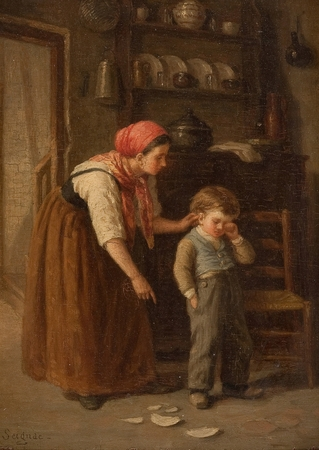

Bohužel občas se něco rozbije, i když nikdo nechtěl. Není ale třeba plakat, snad se tolik nestalo! Víme o tom, a budeme se snažit o rychlou opravu Tak si aspoň užijte trochu umění, a pak se vraťte na začátek.
